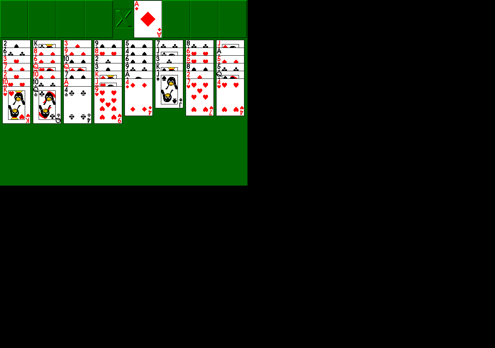

Move cards
Click or drag cards with the mouse. Build descending alternating-colour columns and move aces to the foundations.
Play Freecell, Solitaire, Spider, Minesweeper, Taipei and several other compact classics with a penguin theme.
Follow these in order after the game opens.
Download and run the Linux install-and-play helper.
Freecell opens first. Move cards with the mouse.
Use the Game menu for a new deal; press F1 whenever you need the full rules.
Other included games appear in the Linux application menu under Games.
From the locally cached package documentation and completed gameplay check.
Click or drag cards with the mouse. Build descending alternating-colour columns and move aces to the foundations.
Press F1 for the built-in rules and game help.
Press Escape or Q to close the current game.

Close the game and run bash install-and-play.sh again. It can repair a missing local package without contacting the internet.
This build was tested on 64-bit Debian Linux. Other operating systems need their own launcher before they can be called ready.